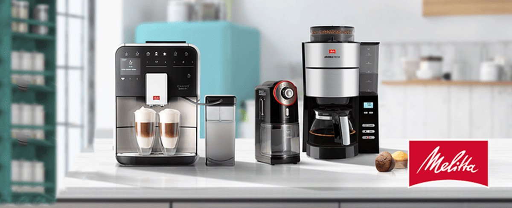
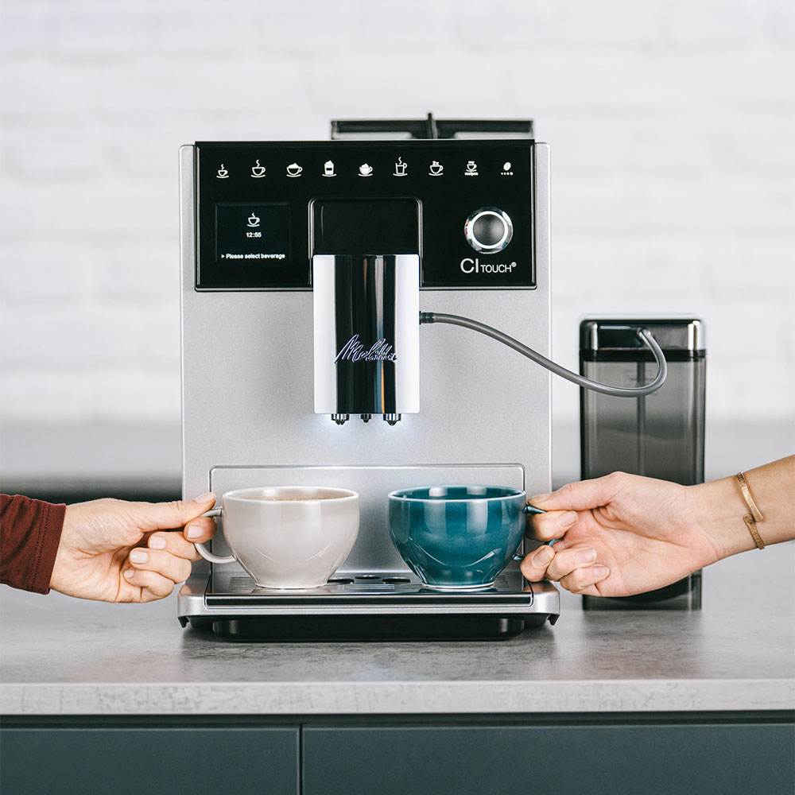
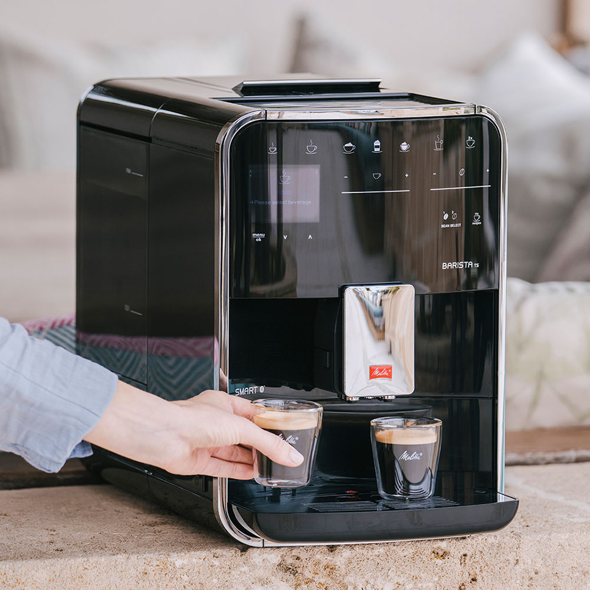
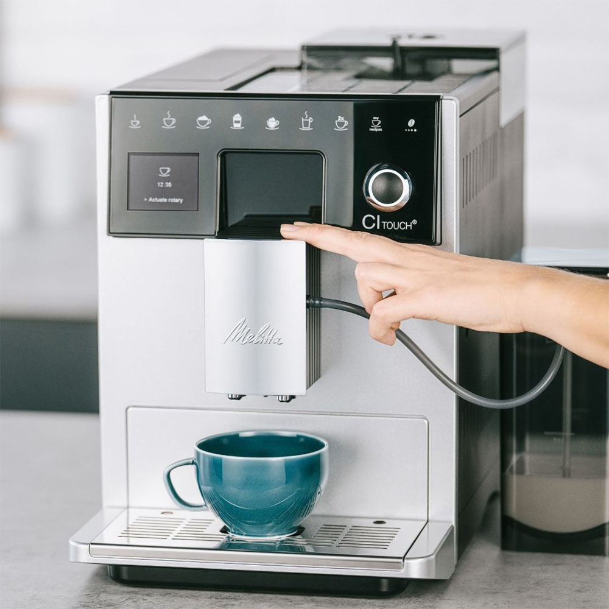

Filtre kahve, kahve çekirdeğinin doğal aromasını ve yumuşak içimini öne çıkaran bir demleme yöntemi olarak öne çıkar. Bu yöntemi ev ortamında dengeli ve tutarlı şekilde uygulamak ise doğru ekipmanla mümkün hale gelir. Melitta, filtre kahveye odaklanan marka kimliğiyle bu noktada güçlü bir konumda yer alır. Yıllara dayanan uzmanlığı sayesinde kahvenin suyla buluşma süresini, sıcaklık dengesini ve demleme akışını merkeze alan çözümler sunar. Böylece her fincanda berrak, aromatik ve dengeli bir tat profili elde edilir.
Evde kahve hazırlama beklentisi günümüzde yalnızca pratiklikten ibaret olmaz; kullanıcılar aynı zamanda kahvenin karakterini doğru şekilde yansıtmasını ister. Melitta’nın yaklaşımı, bu beklentiyi sade ama işlevsel bir deneyimle karşılamaya dayanır. Filtre kahvenin kendine özgü yumuşaklığı ve aromatik yapısı korunur, acılık ya da tat dengesizliği oluşmaz. Bu da günlük kahve hazırlığı sürecini keyifli ve güvenilir bir alışkanlığa dönüştürür.
Vitrin bölümünde öne çıkan Melitta kahve makinesi, markanın filtre kahve konusundaki uzmanlığını somut bir deneyime dönüştürür. Ev ortamında kahve hazırlarken ölçü, zamanlama ve filtre kahve demleme süreci kontrol altına alınır. Sonuç olarak Melitta, filtre kahveyi yalnızca bir içecek olarak değil her aşaması düşünülmüş bir deneyim olarak ele alır. Siz de Melitta kahve makinesi nasıl kullanılır, sorusunun yanıtını ve daha fazlasını merak ediyorsanız bu rehberi inceleyebilirsiniz.

Melitta kahve makinesi modelleri, filtre kahve hazırlamayı merkezine alan geniş bir ürün gamı sunar. Bu gam içinde yer alan modeller, kullanıcıların günlük alışkanlıklarına, kahve tüketim sıklığına ve pratiklik beklentisine göre farklılaşır. Temel amaç her modelde filtre kahvenin aromasını koruyarak dengeli bir demleme deneyimi sağlamaktır.
Giriş seviyesindeki modeller, sade kullanımıyla öne çıkar. Tek tuşla çalışabilen bu seçenekler, filtre kahveyle yeni tanışan ya da hızlı ve zahmetsiz bir hazırlık süreci isteyen kullanıcılar için uygundur. Ölçü ve demleme süreci otomatik olarak ilerler, böylece her seferinde benzer tat elde edilir.
Daha gelişmiş modeller ise demleme sürecini daha kontrollü hale getirir. Programlanabilir özellikler sayesinde kahve hazırlama zamanı önceden ayarlanır. Bu modeller, sabah rutini belirli olan ya da kahvesini hazır şekilde bulmak isteyen kullanıcıların beklentisine hitap eder. Ayrıca sıcak tutma fonksiyonları, kahvenin belirli bir süre ideal sıcaklıkta kalmasını sağlar.
Ürün gamının üst segmentinde yer alan modeller, filtre kahve deneyimini daha detaylı yaşamak isteyenlere yöneliktir. Demleme süresi, su akışı ve aroma dengesi daha hassas biçimde korunur. Bu çeşitlilik sayesinde Melitta, filtre kahve odaklı yaklaşımını farklı kullanıcı profillerine uygun seçeneklerle destekler. Böylece herkes kendi kahve alışkanlığına uygun modeli kolayca bulabilir.
Filtre kahve hazırlarken günlük kullanımda pratiklik ve tat dengesi büyük önem taşır. Melitta ev tipi filtre kahve makinesi modelleri, bu iki beklentiyi bir arada sunmayı hedefler. Günün her saatinde zahmetsiz şekilde kahve hazırlamayı mümkün kılan yapı, ölçü ve demleme sürecini kullanıcı adına dengeler. Böylece her fincanda aroması belirgin, içimi yumuşak bir filtre kahve elde edilir.
Bu modeller, özellikle günlük rutinde tekrar eden kullanım için tasarlanır. Kahve aroması ve demleme dengesi, kahvenin ne acı ne de sönük olmasını sağlar. Demleme sırasında suyun kahveyle temas süresi kontrollü ilerler. Bu da aroma kaybının önüne geçer. Sonuç olarak filtre kahvenin doğal karakteri korunur.
Pratik demleme özellikleri, kullanıcı dostu kahve makinesi modellerinin öne çıkan detayları arasında yer alır. Tek tuşla başlatılan demleme süreci, zamandan tasarruf sağlar. Damlatma sisteminin düzenli çalışması sayesinde kahve akışı dengeli olur. Ayrıca sıcak tutma fonksiyonu, hazırlanan kahvenin belirli bir süre ideal içim sıcaklığında kalmasına yardımcı olur.
Melitta Look serisi, filtre kahve deneyimini sade ama işlevsel bir anlayışla sunar. Günlük kullanımda ihtiyaç duyulan temel özellikleri bir araya getiren bu seri, hem tasarımı hem de kullanım kolaylığıyla öne çıkar. Mutfak ortamına uyum sağlayan dengeli tasarım çizgisi, karmaşadan uzak bir görünüm sunar ve kahve hazırlama sürecini daha keyifli hâle getirir.
Kullanım kolaylığı, Look serisinin en dikkat çeken yönlerinden biridir. Basit kontrol yapısı sayesinde kahve hazırlama süreci zahmetsiz şekilde ilerler. Su haznesinin rahat doldurulması ve filtre bölümünün kolay erişilebilir olması, günlük kullanımda zaman kazandırır. Böylece filtre kahve hazırlamak, karmaşık adımlar olmadan kısa sürede tamamlanır.
Filtre kahve tutkunları için en önemli avantaj ise demleme sürecindeki dengedir. Melitta look kahve makinesi, suyun kahveyle temasını kontrollü biçimde sağlar ve aromanın eşit şekilde çözünmesine yardımcı olur. Bu sayede kahve ne fazla yoğun ne de sönük olur ve dengeli bir tat profili ortaya çıkar. Ayrıca sıcak tutma fonksiyonu, hazırlanan kahvenin belirli bir süre ideal içim sıcaklığını korumasını destekler.


Kullanıcı geri bildirimleri, bir kahve makinesinin günlük hayattaki performansını anlamak açısından önemli bir referans oluşturur. Melitta ürünlerini tercih eden kullanıcılar, genellikle filtre kahve hazırlama sürecindeki tutarlılığa ve elde edilen tat dengesine dikkat çeker. Melitta kahve makinesi yorumları, markanın filtre kahve odaklı yaklaşımının pratikte nasıl karşılık bulduğunu ortaya koyar.
Kullanıcı beklentilerinin başında her demlemede benzer aroma ve içim dengesi elde etmek yer alır. Yapılan değerlendirmelerde kahvenin ne fazla sert ne de yumuşak kaldığı, aromanın dengeli biçimde hissedildiği sıkça vurgulanır. Bu durum, özellikle filtre kahveyi günlük rutininin bir parçası haline getiren kullanıcılar için önemli bir avantaj olarak görülür.
Uzun süreli kullanım deneyimleri de yorumlarda dikkat çeken bir diğer noktadır. Cihazların düzenli kullanımda performansını koruması, kullanıcı memnuniyetini artırır. Melitta filtre kahve makinesi yorumları, makinenin zamanla demleme kalitesinde belirgin bir değişim göstermediğini ve temel işlevlerini istikrarlı biçimde sürdürdüğünü belirtir. Ayrıca temizlik ve bakım süreçlerinin zorlayıcı olmaması, günlük kullanımda olumlu bir etki yaratır.
Doğru kahve makinesini seçmek, filtre kahve deneyiminin kalitesini doğrudan etkiler. Bu nedenle Melitta kahve makinesi tercih ederken ilk olarak kişisel kahve alışkanlıklarını göz önünde bulundurmak gerekir. Gün içinde kaç fincan kahve tüketildiği ve kahvenin hangi saatlerde hazır olmasının istendiği, model seçimini belirleyen temel unsurlar arasında yer alır.
Demleme sıklığı da önemli bir kriterdir. Filtre kahveyi her gün düzenli olarak hazırlayan kullanıcılar için pratik kullanım sunan, hızlı demleme özelliklerine sahip modeller daha uygundur. Daha aralıklı kullanımda ise sade yapılı ve temel işlevleri ön planda olan seçenekler yeterli olabilir. Bu noktada Melitta filtre kahve makineleri, farklı kullanım yoğunluklarına uyum sağlayan alternatifler sunar.
Mutfak kullanım alışkanlıkları da seçim sürecinde dikkate alınmalıdır. Tezgah alanı sınırlı olan mutfaklarda kompakt tasarıma sahip modeller kullanım kolaylığı sağlar. Kontrol panelinin sade olması, su haznesinin rahat doldurulabilmesi ve filtre bölümüne kolay erişim, günlük kullanım konforunu artırır. Ayrıca sıcak tutma süresi gibi detaylar, kahvenin ne kadar süre ideal sıcaklıkta kalacağını belirler.
Jebinde üzerinden yapacağınız alışverişlerde hem güvenli bir satın alma süreci deneyimleyebilir hem de kahve alışkanlıklarınıza en uygun Melitta kahve makinesi modelini kolayca seçebilirsiniz. Filtre kahve odaklı Melitta seçenekleri sayesinde evde dengeli ve aromatik kahve deneyimini profesyonel bir alışveriş altyapısıyla tamamlamış olursunuz.
